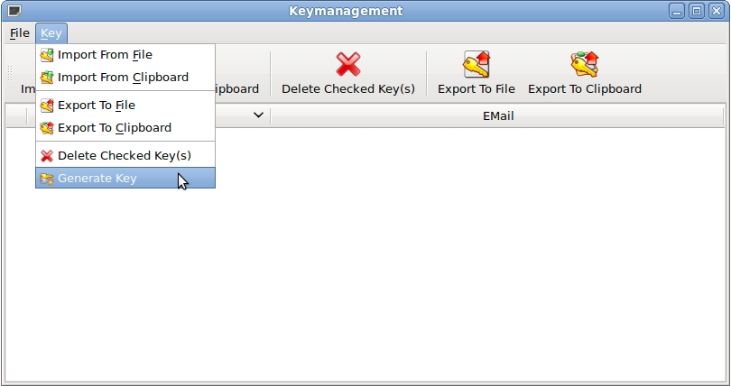
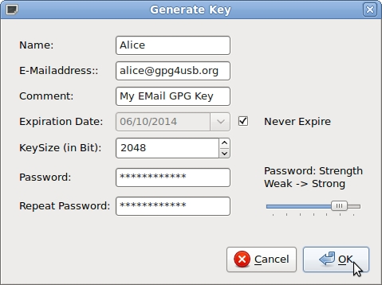

GPG4USB help
Howto generate a GPG-keypair
There are four steps for generating a keypair. We assume, that Alice wants to generate a keypair, so she can decrypt texts, which are encrypted for her.
STEP 1: Open keymanagement
First Alice opens the keymanagement through the toolbar.

STEP 2: Open generate key dialog
Secondly she opens the generate key dialog through the "key"-menu

STEP 3: Fill the form
Now she fills the forms.
NOTE: A key with a higher bitrate is more secure, but also needs a more time to encrypt and decrypt texts. To generate a key, you only have to provide a name. Even the passphrase could be empty (which of course lags of security).

STEP 4: Wait while key is generated
Now Alice has just to wait. The process of the key generation is faster, when Alice does something on her PC, so that the randomdevice gets more input and so more entropy.